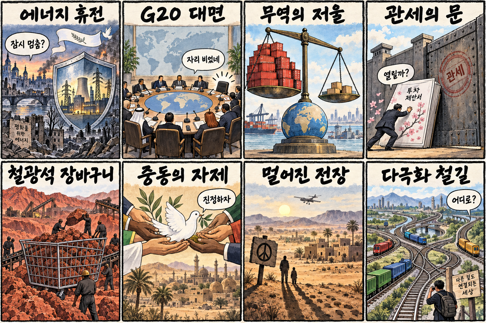
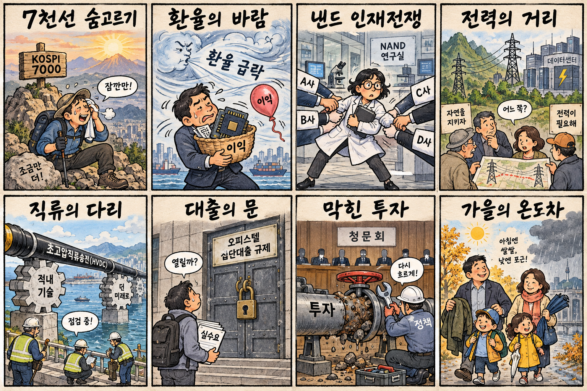

01
슈퍼마이크로컴퓨터 · 37.76→40.10달러 · +6.20%
내용요약 시가 대비 6.03% 상승해 조사 대상 가운데 가장 강한 반등을 보였습니다.
예상여파 AI 서버 수요 기대를 보여주지만 변동성이 큰 종목인 만큼 국내 서버 부품주로 단순 전이해 추격할 근거는 아닙니다.
MORNING_BRIEFING_20260913
작성 시각: 2026-09-13 06:39 KST · 직전 미국 정규장과 2026-09-13 KST 당일 공개 기사 기준
직전 미국 정규장인 9월 11일 뉴욕증시는 위험선호 회복으로 다우 +0.98%, S&P 500 +0.86%, 나스닥 +0.96%로 반등했습니다. 다만 엔비디아·마이크론·오라클 등 일부 반도체·AI 인프라주는 시가 대비 약세여서 지수와 종목의 차별화가 컸습니다. 한국 증시는 일요일 휴장으로 즉시 반영되지 않으며, 월요일에는 미국 반등과 함께 원·달러 환율, 외국인의 국내 반도체 수급, KOSPI 7,000선 회복을 봐야 합니다.
| 지수 | 종가 | 등락률 | 한국 증시 시사점 |
|---|---|---|---|
| 다우존스 | 52,573.29 | +0.98% | 월요일 위험선호 완충, 종목 차별화 유의 |
| S&P 500 | 7,656.98 | +0.86% | 월요일 위험선호 완충, 종목 차별화 유의 |
| 나스닥 종합 | 26,333.04 | +0.96% | 월요일 위험선호 완충, 종목 차별화 유의 |
다우·S&P 500·나스닥이 모두 0.8% 이상 올랐습니다.
환율과 외국인 반도체 수급을 함께 확인해야 합니다.
데이터센터 금융과 모델기업 투자가 동시에 커지고 있습니다.
일요일 휴장이라 당일 시가 진입 기준을 설정하지 않습니다.
9월 12일 보고서는 토요일 휴장과 필수 수급·컨센서스·보정 표본 부족으로 공식 추천을 내지 않았습니다. 게시 당시 판단은 유지하며 사후 종목을 추가하지 않습니다.
| 시장 | 종가 | 등락률 | 기준 |
|---|---|---|---|
| KOSPI | 6,909.91 | -1.76% | 9월 11일 · 시가 대비 +1.58% |
| KOSDAQ | 820.64 | -1.95% | 9월 11일 · 시가 대비 +0.46% |
| 다우존스 | 52,573.29 | +0.98% | 미국 9월 11일 정규장 |
| S&P 500 | 7,656.98 | +0.86% | 미국 9월 11일 정규장 |
| 나스닥 종합 | 26,333.04 | +0.96% | 미국 9월 11일 정규장 |
3대 지수가 0.8~1.0% 반등하며 위험선호가 회복됐습니다.
슈퍼마이크로컴퓨터가 시가 대비 6%대 상승했습니다.
전일 삼성전자 -3.53%, SK하이닉스 -2.21%로 마감했습니다.
오라클·엔비디아·마이크론은 지수 반등과 달리 밀렸습니다.
내용요약 시가 대비 6.03% 상승해 조사 대상 가운데 가장 강한 반등을 보였습니다.
예상여파 AI 서버 수요 기대를 보여주지만 변동성이 큰 종목인 만큼 국내 서버 부품주로 단순 전이해 추격할 근거는 아닙니다.
내용요약 시가 대비 1.42% 상승하며 대형 기술주 반등에 기여했습니다.
예상여파 국내 부품주는 실제 공급 비중과 주문 변화를 별도로 확인해야 합니다.
내용요약 시가 대비 8.61% 하락해 지수 반등과 정반대의 흐름을 보였습니다.
예상여파 AI 데이터센터 투자 기대가 있어도 재무 부담과 밸류에이션 재평가가 단기 변동성을 키울 수 있습니다.
내용요약 시가 대비 1.81% 하락해 메모리 업종의 상대 약세가 이어졌습니다.
예상여파 월요일 국내 메모리주는 미국 지수 반등보다 외국인 수급과 가격 지지가 중요합니다.
내용요약 시가 대비 1.34% 하락하며 나스닥 상승을 따라가지 못했습니다.
예상여파 국내 AI 반도체 공급망에는 투자심리 부담이지만 개별 수주·실적과 분리해 판단해야 합니다.
오늘은 일요일로 한국 증시가 휴장합니다. 직전 거래일 KOSPI는 6,909.91로 7,000선을 내줬고 전일 종가 대비 -1.76%였지만 시가 대비로는 +1.58% 회복했습니다. 미국 3대 지수 반등은 월요일 개장에 완충 요인이지만 엔비디아·마이크론 약세, 원화 강세에 따른 반도체 이익 눈높이 하락, 외국인 매도는 부담입니다. 월요일에는 KOSPI 7,000선 회복, 원·달러 환율, 외국인 선물·현물 동반 수급을 확인한 뒤 대응하는 편이 합리적입니다.
오늘은 추천 없음 — 현금 관망
일요일 휴장으로 당일 시가 진입 기준과 1일 예상 손익비를 설정할 수 없습니다. 전일까지의 수급·컨센서스·30건 이상 유사 조건 확률 보정도 문턱을 충족하지 않아 점수와 상승확률을 임의로 만들지 않습니다.
관심 연결종목 AI 전력망, 반도체 장비, 서버 인프라는 월요일 관찰 대상일 뿐 매수 추천이 아닙니다. 미국 반등을 이유로 장전 예상 갭을 추격하지 않습니다.
오늘은 신규 진입보다 월요일 시나리오와 손실 한도를 정리합니다.
월요일 회복 여부와 외국인 선물·현물 동반 수급을 봅니다.
원화 강세가 반도체 이익 눈높이와 외국인 수급에 미치는 영향을 봅니다.
지수 반등에도 엔비디아·마이크론이 약했던 점을 점검합니다.
핵심 요약: AI 경쟁은 칩 판매를 넘어 데이터센터 금융과 모델기업 지분 투자로 확장되고 있습니다. 동시에 미국 지방정부의 지원 재검토, 전력망 부담, 환율에 따른 반도체 이익 변화, 사이버 공조가 실행 리스크로 부상했습니다.
내용요약 AI 데이터센터를 둘러싼 전기요금·환경 부담 여론이 악화되자 미국 주정부가 세제·자금 지원을 재검토한다는 당일 보도입니다.
예상여파 입지 인센티브 축소는 데이터센터 건설 속도와 전력·냉각 설비 발주에 부담을 줄 수 있어 지역별 정책 차이를 봐야 합니다.
내용요약 엔비디아가 AI 인프라 생태계에 최대 5천억달러 규모의 자본 동원을 추진한다는 당일 보도입니다.
예상여파 칩 판매를 넘어 데이터센터 금융과 생태계 지배력을 넓히는 흐름이지만 자본집약도와 투자 회수기간도 함께 커집니다.
내용요약 엔비디아가 앤스로픽에 100억달러 투자를 검토하고 대형 상장 가능성이 거론된다는 당일 보도입니다.
예상여파 모델 기업과 칩 공급자의 자본 결합이 심화되면 경쟁구도와 클라우드 조달 협상력이 재편될 수 있습니다.
내용요약 원화 가치 급변으로 국내 반도체 기업의 환산 이익 전망이 두 달 사이 크게 낮아졌다는 당일 분석입니다.
예상여파 제품 가격과 출하량이 좋아도 환율 민감도가 실적 눈높이를 흔들 수 있어 원화 강세 지속 여부가 중요합니다.
내용요약 아르헨티나 정보당국 책임자가 AI 기반 사이버 공격의 속도와 국가 간 공조 필요성을 강조한 당일 인터뷰입니다.
예상여파 공공·금융·기간망은 탐지 자동화뿐 아니라 위협정보 공유와 사람의 승인 절차를 함께 강화할 필요가 있습니다.
핵심 요약: 우크라이나는 제재 강화와 에너지시설 휴전, G20 대면 가능성을 동시에 제시했습니다. 무역에서는 중국의 수출 불균형과 철광석 구매력, 일본의 대미 투자·관세 협상이 공급망 질서를 흔드는 변수입니다.
내용요약 젤렌스키 우크라이나 대통령이 러시아 제재의 즉각 강화와 에너지시설 휴전을 제안했다는 당일 국제 보도입니다.
예상여파 에너지 기반시설 보호 합의 여부는 겨울철 공급 위험과 유럽 전력·가스 가격의 지정학적 프리미엄에 영향을 줄 수 있습니다.
내용요약 젤렌스키 대통령이 마이애미 G20에서 푸틴 대통령과 대면할 의사를 밝혔다고 전한 당일 보도입니다.
예상여파 정상 간 접촉 가능성은 협상 기대를 높이지만 실제 의제와 당사국 수용 여부가 확인되기 전까지 변동성 재료입니다.
내용요약 세계 무역불균형이 지속 가능하지 않으며 중국 경제의 수출 의존 구조가 취약점이라는 당일 분석입니다.
예상여파 무역마찰과 내수 부진이 겹치면 원자재·중간재 수요와 한국 수출기업의 가격 경쟁에 영향을 줄 수 있습니다.
내용요약 일본이 미국에 대규모 투자 패키지를 제시한 뒤 관세 협상에서 확보한 실익을 따져본 당일 국제 보도입니다.
예상여파 투자 약속과 시장 접근을 맞바꾸는 협상 방식이 확산되면 한국 기업에도 현지 투자·조달 압력이 커질 수 있습니다.
내용요약 중국이 전 세계 철광석 구매의 약 70%를 바탕으로 공동구매와 가격 협상력을 강화한다는 당일 보도입니다.
예상여파 철광석 가격 결정 구조 변화는 글로벌 광산사와 철강사의 마진, 한국 철강업의 원가 협상에 영향을 줄 수 있습니다.

핵심 요약: 월요일 시장은 KOSPI 7,000선과 환율·반도체 이익 전망을 함께 봐야 합니다. 낸드 인재 경쟁과 수도권 송전망 갈등, 초고압직류송전 국산화는 기술과 전력 인프라의 병목을 보여줍니다.
내용요약 원화 강세로 반도체 기업의 환산 이익 전망이 두 달 사이 21조원가량 줄었다는 당일 시장 분석입니다.
예상여파 월요일 반도체주는 미국 기술주 반등뿐 아니라 원·달러 환율과 외국인 수급의 동시 안정 여부가 중요합니다.
내용요약 글로벌 낸드 업체가 한국 엔지니어 채용에 나서며 반도체 인재 확보 경쟁이 메모리 전반으로 번진다는 당일 보도입니다.
예상여파 핵심 인력 이동은 연구개발 속도와 기술보호 비용을 동시에 높여 기업의 보상·보안 정책 강화를 압박할 수 있습니다.
내용요약 수도권 전력 수요를 지방 송전망 확충으로 충당하는 과정에서 지산지소 원칙과 주민 수용성이 충돌한다는 당일 보도입니다.
예상여파 송전망 지연은 데이터센터와 첨단산업 입지의 병목이 될 수 있어 분산전원·계통 보강의 실행 속도가 중요합니다.
내용요약 한전과 효성중공업이 초고압직류송전 기술의 국산화와 에너지 주권 강화를 추진한다는 당일 보도입니다.
예상여파 국산 장비의 실증과 상용화가 이어지면 장거리 송전 효율과 전력기기 공급망 안정에 도움이 될 수 있습니다.
내용요약 일요일은 아침 최저 12도 안팎으로 선선하고 낮에는 늦더위가 이어져 큰 일교차가 예상된다는 당일 기상 보도입니다.
예상여파 외출 때 얇은 겉옷을 챙기고 수도권 빗방울·안개 구간의 보행과 운전 안전에 유의해야 합니다.
